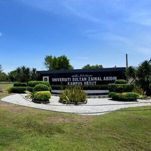
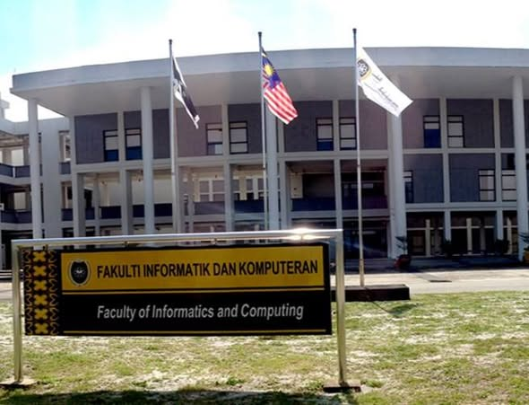
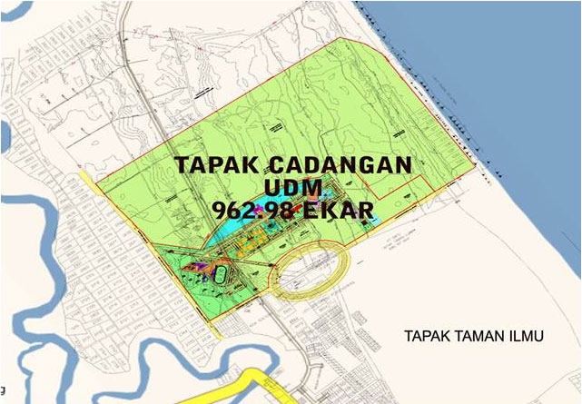
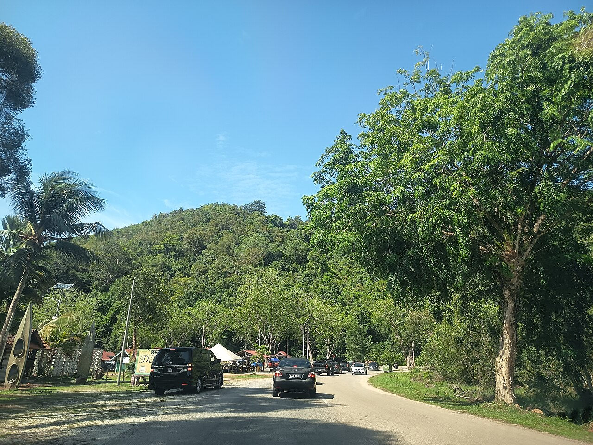
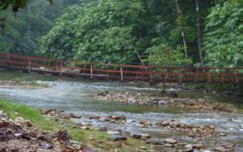
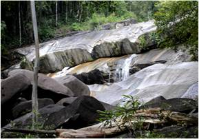
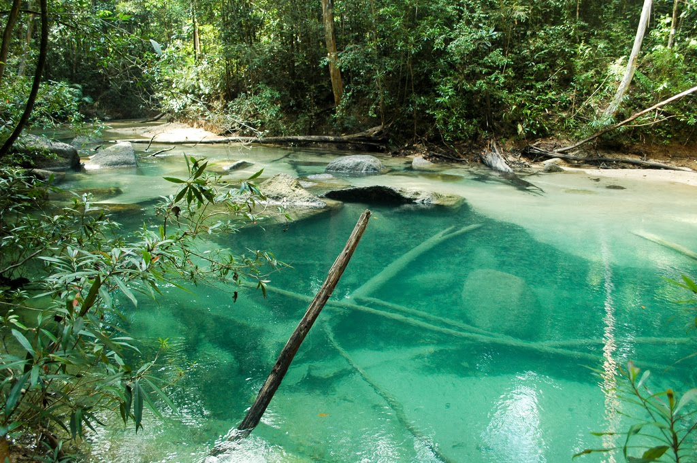

{kind=link}
{kind=link}
Programme Goals
Develop talented, competitive, ethical software technocrats who support national aspirations and the global digital economy through responsible software engineering.
Universiti Sultan Zainal Abidin
UniSZA Kampus Besut (Pejabat Pengarah Kampus Besut, PPKB) at Tembila, 22200 Besut, Terengganu is the newest and largest campus of Universiti Sultan Zainal Abidin. Operating since 2013, it spans 956 acres of calm, green landscape, ideal for focused study away from city noise.
Three faculties share this campus: Fakulti Informatik dan Komputeran (FIK), Fakulti Biosumber & Industri Makanan (FBIM), and Fakulti Farmasi (FF), together with the Pusat Pengurusan Makmal Berpusat (CLMC). Official records cite 1,400+ students on campus, with niche strengths in ICT, bioresources, food industry, and pharmacy.


My Faculty
Fakulti Informatik dan Komputeran (FIK), Faculty of Informatics and Computing, evolved from the IT Centre (2006) and now leads ICT education at Besut. FIK has produced 2,236+ graduates and offers 12 academic programmes (diploma, degree, master, PhD).
Three schools operate under FIK: Sekolah Sains Komputer (School of Computer Science), Sekolah Teknologi Maklumat, and Sekolah Multimedia. My degree sits under School of Computer Science. FIK also runs UniSZA Digital Hub (UDH) for research, industry training, and innovation.
Programme DC11 · BCS-SD
Sarjana Muda Sains Komputer (Pembangunan Perisian) dengan Kepujian · Bachelor of Computer Science (Software Development) with Honours
First offered July 2006/2007, SMSKPP is a full-time honours degree under FIK's School of Computer Science. Duration is 3½ years (7 semesters): six academic semesters plus six months industrial training (Latihan Industri). Teaching combines lectures, tutorials, practical labs, presentations, projects, and industry placement, preparing graduates as competitive software technocrats for Malaysia's digital economy.
Develop talented, competitive, ethical software technocrats who support national aspirations and the global digital economy through responsible software engineering.
Software Engineer · System Engineer · System Analyst · Network Engineer · Programmer · Web Developer · Database Administrator · ICT Entrepreneur · Researcher
FYP I (CSF35304) completed with grade A. FYP II (CSF35404) in progress. Industrial Training (CSF47112, 12 credits), Sep 2026 – Mar 2027.
Covers web apps, mobile frameworks, databases, AI, data mining, software testing, and project management, the same stack I use in my GitHub portfolio, FYP, and internship preparation (Sep 2026 – Mar 2027).
Overall Results
Official examination results from UniSZA student portal (Jun 2026). Programme DC11, Bachelor of Computer Science (Software Development) with Honours. Student No. BTAL23076790 · Semester 6 · PNGK 3.81.
Courses by Semester
Verified transcript with course codes, credit hours, and grades. Semesters VI–VII follow the FIK BCS-SD handbook (Session 2023/2024).
Examination results are subject to confirmation by the Senate of Universiti Sultan Zainal Abidin. Grade scale: A (4.00), A- (3.67), B+ (3.33), B (3.00), B- (2.67).
Fakulti Informatik dan Komputeran
All FIK diploma, degree, master, and PhD programmes are delivered at UniSZA Kampus Besut, Tembila.
SMSKPP · Computer Network Security · Internet Computing · Informatics Media, all with Honours, MQA-accredited.
Diploma in Computer Science · Diploma in Information Technology, foundation pathways into FIK degree programmes.
Master of Science (Computer Science · Mathematics) · Master of IT (Management Informatics) · PhD in CS, Mathematics, Statistics.
FIK's innovation arm, ICT services, co-working, professional training, lab facilities, and industry-linked research at Besut Campus.
PPKB · Kampus Besut
Facilities at UniSZA Kampus Besut that support my SMSKPP degree every day.
Hands-on labs for programming, cloud computing (CSW34003), web services (CSW33903), mobile development, databases, and integrated assessments, where I build real systems every semester.
Official campus library (2020) with 500-user capacity, discussion rooms, and thesis rooms. 360° tour
Two auditoriums, Senate room, seminar rooms, and 12 lecture halls, venue for Road to Excellence and faculty events.
Taman Rimba Ilmu Tanah Bris, on-campus forest reserve for environmental learning and sustainable campus life since 2020.
Multipurpose hall, gymnasium, football field, archery range, cycling routes, and kayaking facilities on campus.
Pusat Pengurusan Makmal Berpusat supports shared science and research labs across FIK, FBIM, and FF.

Life Beyond Campus
Studying at Tembila means more than classrooms, East Coast culture, rainforest escapes, and island gateways are part of the journey.

The iconic state gateway marks every trip back to campus, a reminder that Besut is home to focused study and East Coast hospitality.
Learn more →
~45 min from campus to Kuala Besut Jetty, the mainland gateway to Perhentian Islands for snorkeling, diving, and crystal-clear waters. Also connects to Lang Tengah and Redang routes.
Learn more →
Scenic beach and recreation park north of Besut, light hiking on the hill, sea breeze, and one of Terengganu's most relaxed coastal spots for weekend resets.
Learn more →
~24 km from Jerteh, 300-hectare forest park with waterfalls, natural pools, suspension bridge, camping, and jungle trails. Popular for scouts and outdoor programmes.
Learn more →
20-hectare recreational forest ~15 km south of Jerteh. Picnic sites, camping, and a challenging Gunung Tebu (1,097 m) climb for adventurous hikers.
Learn more →
Natural sulfur hot springs ~28 km from Jerteh in Hulu Besut. Natural pools up to 49°C, spa facilities, and chalets, a famous local retreat since 1992.
Learn more →Campus address: Universiti Sultan Zainal Abidin, Kampus Besut, 22200 Tembila, Besut, Terengganu · PPKB Tel: 09-819 3001 · ppkb@unisza.edu.my
Photo Journal
Real photos from my life at FIK, Besut Campus. Each moment reflects how I learn, collaborate, and grow as an SMSKPP (Software Development) student.

My degree journey begins with the trip to Terengganu. Crossing the welcome gateway reminds me that studying at UniSZA Besut is a commitment to grow far from home and build discipline in a focused campus environment.

On campus grounds I represent Fakulti Informatik dan Komputeran with pride. FIK is where I attend lectures, complete assignments, and connect with lecturers and peers in the SMSKPP programme.

FIK computer labs are where theory becomes practice. During Web Services and other modules I build real systems, test portals, and complete integrated assessments in a professional lab setting.

Group projects and presentations happen in FIK meeting spaces equipped with screens and seating for teams. This is where we plan features, review code, and prepare deliverables before submission.

Beyond lectures I spend hours coding, testing mobile apps, and presenting progress to teammates. These sessions trained me to work like a real software developer under deadlines and team expectations.

Learning with my Software Development cohort and lecturers keeps me motivated. Group photos like this capture the community spirit at FIK where we share knowledge, support each other, and push for Dean's List performance together.

UniSZA hosts career programmes like Road to Excellence with industry partners. These events help me understand internship expectations and prepare for professional roles after graduation.

Walking on stage for Anugerah Cemerlang was a defining moment of my journey. It reflects consistent Dean's List performance and the discipline I built throughout my years at FIK, Besut Campus.
360° Experience
Official 360° virtual tours from UniSZA. Walk through Kampus Besut and the library from anywhere.
Interactive virtual tour of UniSZA Besut Campus grounds and buildings.
Launch Tour →Explore the library interior, study areas, stacks, and facilities at Besut Campus.
Launch Tour →Compare Gong Badak, Besut, and Medical campuses on the official UniSZA hub.
Visit UniSZA →{kind=link}
{kind=link}
{kind=link}
{kind=link}
{kind=link}